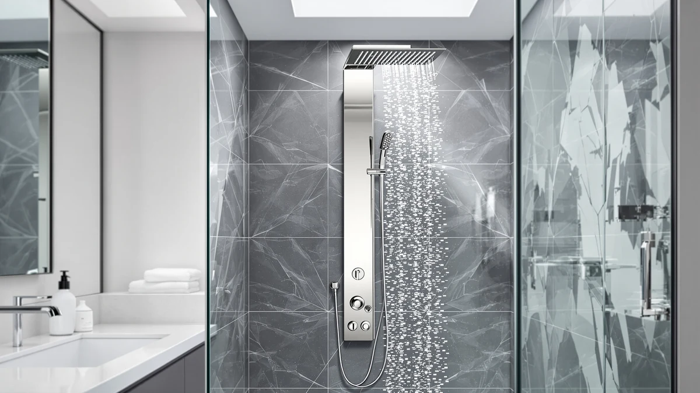

How to Clean a Shower Panel (2026): Limescale, Jets & Glass
Prices and picks verified as of August 2026. Independent, reader-supported reviews.


Things to Know Before You Buy
- Hard water is the main cause of clogged jets, and homes with water hardness above 7 grains per gallon need to descale shower panels every 4 to 6 weeks instead of every few months.
- White vinegar dissolves calcium and lime scale without damaging chrome, stainless steel, or acrylic, but it can dull brushed nickel and oil-rubbed bronze finishes if left on too long.
- Abrasive pads and powdered cleansers scratch acrylic panel faces permanently, so a microfiber cloth and a non-abrasive spray are the only safe combination for the front panel.
- A full clean, including a vinegar soak, takes about 45 minutes and costs roughly $15 in supplies you likely already have on hand.
- Drying the jets and panel after every shower, not just during deep cleans, cuts mineral buildup by keeping mineral-rich water from sitting and evaporating on the surface.
Learning how to clean a shower panel the right way is the difference between a tower that still sprays evenly after three years and one where half the jets clog with mineral crust by month six. Hard water leaves calcium and lime deposits inside the tiny nozzle openings, and those deposits build fastest in homes with well water or municipal water rated above 7 grains per gallon. Left alone, the buildup restricts flow, throws jets out of alignment, and eventually forces water sideways instead of forward.
This guide walks through the same order plumbers and panel manufacturers recommend: soak first, scrub the metal parts most people neglect, then finish with the glass or acrylic face and a full dry-down. None of the five steps require power tools or harsh chemicals, and a full clean takes about 45 minutes once the vinegar soak is going. We researched manufacturer maintenance guides and cross-checked them against verified owner reviews to confirm which methods keep panels working long-term and which ones just look clean for a day.
What You'll Need
- Supplies: white vinegar, mild dish soap, and baking soda
- Tools: a soft-bristle brush (or an old toothbrush) and a few microfiber cloths with a squeegee
Step 1: Shut Off the Water and Clear the Panel Surface
Start by shutting off the water supply to the shower panel, either at the dedicated shutoff valve behind the access panel or at the main bathroom line if the tower doesn't have its own valve. Cleaning while water still runs through the jets pushes cleaning solution straight through the nozzles instead of letting it sit and break down mineral deposits.
Clear the shelf or caddy attached to the panel and set shampoo bottles, razors, and soap dishes aside. Wipe the entire face of the panel with a damp microfiber cloth to lift loose hair, soap scum, and surface dust. This first pass matters because dried soap residue mixed with descaling solution turns into a paste that's harder to rinse away than either substance on its own.
Check the caulk line where the panel meets the wall while you're wiping it down. Cracked or peeling caulk lets water get behind the panel during cleaning, so flag it now even if you're not fixing it today.
Step 2: Soak the Jets and Showerhead in Vinegar
Pour undiluted white vinegar into small plastic bags, enough to submerge the nozzle openings, and secure one over the main showerhead and one over each cluster of body jets using rubber bands. The acid in the vinegar breaks down calcium and lime scale without scratching chrome, stainless steel, or the rubber nozzles most panels use.
Leave the bags in place for 30 to 60 minutes. Panels that haven't been cleaned in six months or longer, or homes on very hard water, benefit from the full hour. Small bubbles usually form around the nozzles as the vinegar reacts with the mineral deposits, which is a normal sign the soak is working.
For panels with a rain shower head that can't hold a bag in place, fill a shallow container with vinegar instead and hold the head submerged for 15 minutes, or spray vinegar directly onto the nozzle face and let it sit.
Step 3: Scrub the Nozzles and Body Jets
Remove the vinegar bags and rinse the jets briefly with warm water. Dip a soft-bristle brush or an old toothbrush in the remaining vinegar and scrub each nozzle in a small circular motion. Loosened mineral deposits usually come off as a chalky residue that rinses away easily at this stage.
For nozzles that are still partially blocked, use a toothpick or a soft silicone nozzle-cleaning tool to gently clear the opening. Avoid metal pins or paperclips, since they scratch the rubber nozzles and enlarge the holes, which throws off the spray pattern permanently.
Turn the water supply back on briefly and run each jet individually to flush out loosened debris and confirm the spray pattern is even across every nozzle. Turn the water back off before moving to the next step.
Step 4: Clean the Glass or Acrylic Panel Face
Mix a few drops of mild dish soap into warm water and wipe the glass or acrylic face with a soft, non-abrasive cloth. Work in overlapping strokes rather than tight circles, since circular scrubbing tends to leave visible swirl marks on acrylic panels under bathroom lighting.
For stainless steel or brushed nickel housing, wipe in the direction of the brushed grain rather than against it. Cleaning against the grain traps soap residue in the finish lines and leaves streaks that show up once the surface dries. A baking soda paste, made from three parts baking soda to one part water, lifts stubborn water spots on stainless steel without scratching it, as long as you rinse it off within a few minutes.
Skip glass cleaners with ammonia on tinted or coated acrylic panels. Ammonia breaks down the protective coating over repeated use and leaves the surface cloudier than before you started.
Step 5: Rinse, Dry, and Polish the Stainless Steel
Rinse the entire panel, including the jets, with clean warm water to remove any leftover vinegar, soap, or baking soda residue. Leftover cleaning solution attracts dust and new mineral buildup faster than a bare surface does, so a thorough rinse matters as much as the scrubbing itself.
Dry the glass or acrylic face with a squeegee, working top to bottom, then finish with a dry microfiber cloth on the stainless steel and any remaining glass edges. Standing water left to air-dry is what leaves the spotty white film that makes a freshly cleaned panel look dirty again within a day.
Once the panel is fully dry, a few drops of mineral oil or a dedicated stainless steel polish on a soft cloth add a light protective layer that makes the next cleaning easier and keeps the metal looking newer for longer.
Common Mistakes to Avoid
Using bleach or ammonia-based cleaners on a shower panel is the most common mistake, and also the most damaging. Bleach breaks down the rubber gaskets and nozzle seals over time, while ammonia clouds acrylic and strips the protective coating on tinted glass. Stick to white vinegar, mild dish soap, and baking soda for routine cleaning, and save stronger products for surfaces that don't touch the jets or seals.
Scrubbing with steel wool or abrasive powders is a close second. These leave fine scratches on stainless steel and acrylic that aren't visible when dry but show up as a dull, hazy patch once the panel gets wet again. A soft-bristle brush and a microfiber cloth handle everything a shower panel needs.
Skipping the vinegar soak and going straight to scrubbing is another shortcut that backfires. Dry mineral deposits are hard and bonded to the nozzle surface, so scrubbing without softening them first just pushes debris deeper into the opening instead of removing it.
Letting the panel air-dry after every shower, rather than just after a deep clean, is the mistake that brings you back to this guide again in a month. Standing water evaporates and leaves mineral traces behind every time, so a quick squeegee pass after each use does more to prevent buildup than any single deep clean.
Our Top Picks
If your current panel's nozzles are too far gone to save, or you're shopping for one that's easier to keep clean from the start, these three multi-jet towers hold up well against hard water and are straightforward to maintain.

Editor’s Pick
ELLO&ALLO Stainless Steel Shower Panel
The fully stainless steel body resists the pitting and rust spotting that cheaper chrome-plated panels develop after a year or two of regular descaling.
$229.97
Check Price on Amazon
Best Value
FUZ Contemporary Shower Panel Tower
A tempered glass control panel and a straightforward jet layout mean fewer tight corners to scrub during a deep clean, at a price well below most stainless steel towers.
$169.00
Check Price on Amazon
Premium Choice
Blue Ocean 52" Stainless Steel
The 52-inch body spaces the jets further apart than most towers, so mineral deposits from one nozzle are less likely to drip onto the one below it between cleanings.
$369.00
Check Price on AmazonFrequently Asked Questions
How often should I clean a shower panel?
Wipe down the glass and jets after every use with a squeegee, and do a full vinegar soak every 4 to 6 weeks if you have hard water, or every 2 to 3 months with soft water. Panels with visible white crust around the nozzles need attention sooner regardless of schedule.
Can I use CLR or a commercial descaler instead of vinegar?
Yes, a dedicated calcium and lime remover works faster than vinegar on heavy buildup, but check the label against your panel's finish first. Some commercial descalers etch brushed nickel and oil-rubbed bronze, while white vinegar is safe on every common shower panel finish.
Why do my shower panel jets spray unevenly after cleaning?
Uneven spray after a clean usually means one or two nozzles are still partially blocked. Re-soak just those nozzles in vinegar for another 30 minutes and clear the opening with a toothpick rather than scrubbing harder, which can misshape the rubber nozzle.
Is it safe to clean a shower panel with a magic eraser?
Melamine sponges are mildly abrasive and can dull the finish on acrylic and painted panel faces over repeated use. They're fine for stubborn spots on solid stainless steel, but a microfiber cloth is the safer default for the rest of the panel.
How do I remove black mold from around a shower panel?
Spray a solution of one part bleach to ten parts water directly on the mold, let it sit for 10 minutes, then rinse thoroughly and dry the area. Keep bleach away from the jets and nozzles themselves, since it degrades the rubber seals over time, and improve bathroom ventilation afterward to slow mold from returning.
Verdict
Cleaning a shower panel comes down to soaking the jets, scrubbing what the soak loosens, and drying everything before mineral deposits get the chance to reform. Once you know how to clean a shower panel with vinegar and a soft brush instead of harsh chemicals, the whole process takes under an hour and protects the seals and finish for years rather than months. The order matters more than the products: soak first, scrub second, and never skip the final dry-down, since standing water is what brings the white film back within days.
If your current panel's nozzles are too far gone to save, or you're shopping for one that's easier to maintain from the start, the ELLO&ALLO Stainless Steel Shower Panel holds up better against hard water than most chrome-plated towers in its price range, and its fully stainless construction means fewer rust spots to scrub around during future cleanings. Whichever panel you own, a consistent 45-minute clean every four to six weeks keeps the jets running at full pressure and the glass looking new.